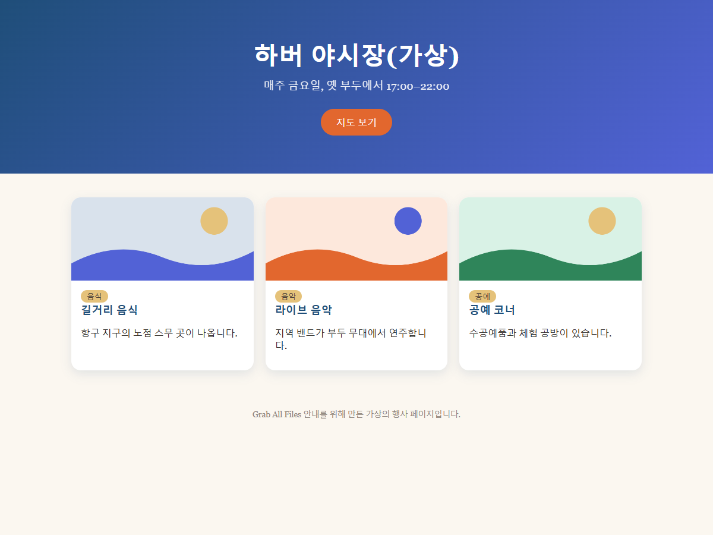

Grab All Files의 실제 출력 결과
페이지를 원래 디자인 그대로 HTML로 저장(무료)
색상과 카드 배치가 있는 가상의 행사 페이지를 원래 모양을 유지한 HTML 파일 하나로 저장했습니다. 이미지는 파일 안에 들어 있어 오프라인에서도 표시됩니다. 페이지를 얼마나 비슷하게 재현하는지는 페이지의 구조에 따라 달라집니다.
출력 파일
같은 창 너비에서 나란히 비교

만든 방법
- 원본 페이지
- /samples/source/ko/night-market/
- 확장 프로그램
- Grab All Files 5.8.20
- 브라우저
- Chrome 155.0.8059.85 (Windows 11)
- 요금제
- 무료
- 작성일
- 2026-10-21
- 설정
- 페이지: 현재 페이지만
- 모양: 원래 모양 그대로
- 이미지: 오프라인 저장(기본값)